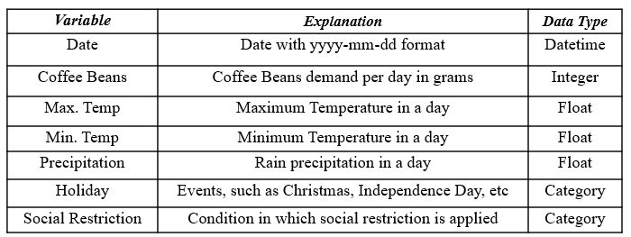
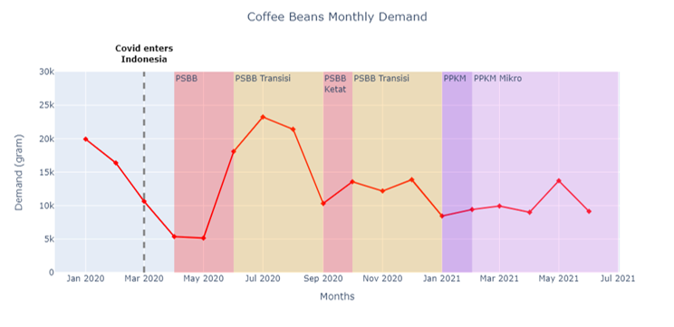
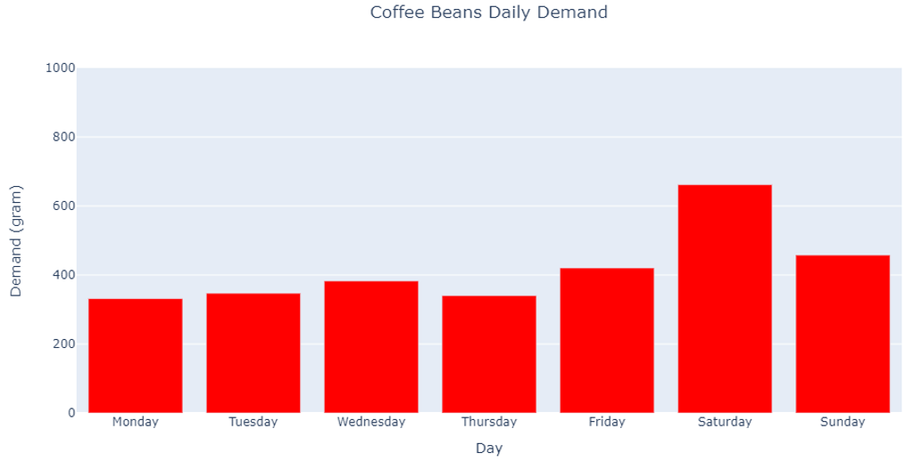
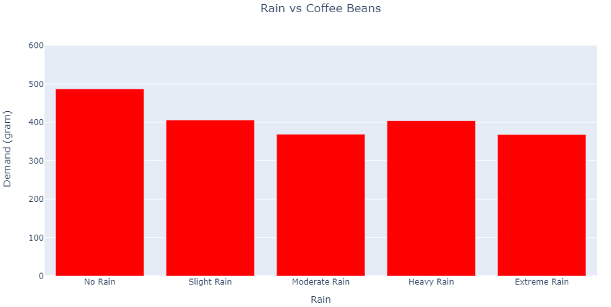
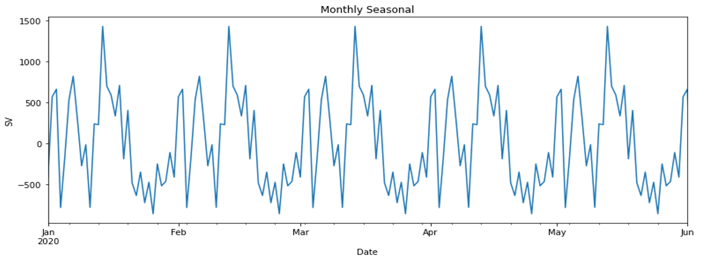
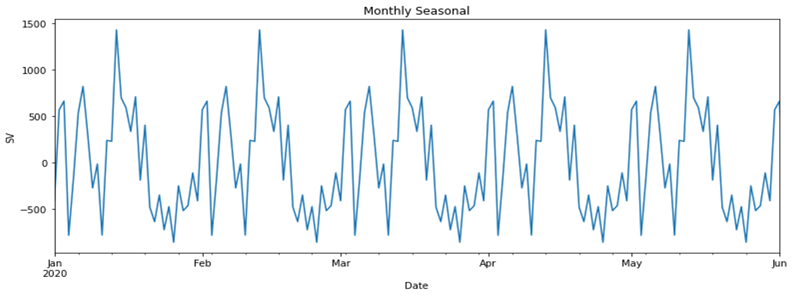
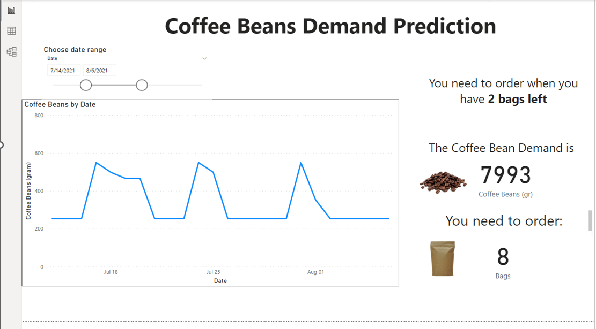
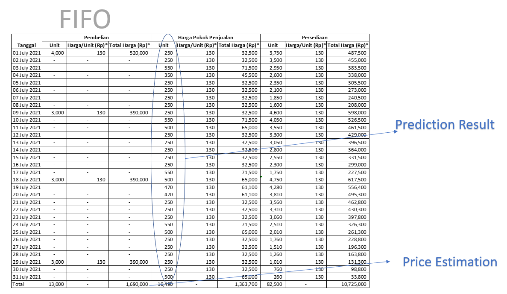

Coffee Demand Prediction
Background
The considerably growing number of customers causes the coffee shop to encounter complications in inventory management. Moreover, the establishment of social restrictions by the government to prevent COVID-19 transmission leads to demand uncertainty and unpredictable number of customers.
Therefore, A forecasting model and its application was developed to implemented into the business in order to:
- Avoid oversupply and undersupply of coffee beans
- Establish a method to use the forecasting model into the business system
- Be implemented as a fundamental step in deciding a supply order
Methodology
Steps in developing and implementing the model includes:
- Data Collection: Gathering internal data (coffee demand) from POS System and external data (Weather, holiday, etc)
- Data Pre-processing: Transform transaction data to coffee demands
- Model Training: model selection, hyperparameter tuning, feature engineering
- Perfomance Comparison: Compare the error and result generated by the models
- Model Implementation: Dashboard creation and supply order planning

The machine learning including the data processing were performed using Python programmin, while PowerBI were used for dashboard modeling.
TThe training dataset consists of between '1/1/2020' to '31/5/2021', while the testing dataset consists between '1/6/2021' to '30/31/2020'
The dependent or variable is the coffee beans demand in grams, the value that will be predicted. The other variables are the independent variables or predictor variables.
Data Exploration
To understand the data further before the model training, the data exploration were performed for the following aspects:
- Actual data plotting with information regarding the enforced social restrictions 
- Time series decomposition (trend and monthly seasonality)
- Day vs average demand 
- Rain intensity vs average demand 
- Dataset that consist of date variable only
- Dataset that uses all the variables that was listed in the previous table

 

Forecasting Result
The models were trained with two different datasets:

MLR model using all variables achieved the lowest MAPE with the value of 41.428, whereas DT model using all variables achieved the lowest RMSE and MAE value of 132.625 and 95.14 respectively.
Overall, the models that use all variables produce smaller errors than those that use only the date variable.
ANN-MLP forecast result resembles more the variation of the past data, where as FARIMA forecast values creates a single straight line in other words, almost identical forecast values.
Consequently, ANN-MLP with parameter of (4,0.2,1) was selected as the best model. This model was used to generate the forecast value of the next 30 days in the dashboard.
Model Implementation
Based on the prediction pattern and error measurements, the DT model has been selected as the best model to predict the future value of coffee beans demand.
The displayed predicted value was based on the prediction results of the DT model. The dashboard not only informs the number of demanded coffee beans in the future, but also the number of bags that is needed to order.
The FIFO method helps the estimation for the costs of buying coffee beans are determined and this could help to consider the company's income and expenses.
The total price shown is an estimate of the costs that need to be incurred for ordering coffee beans in July 2021.